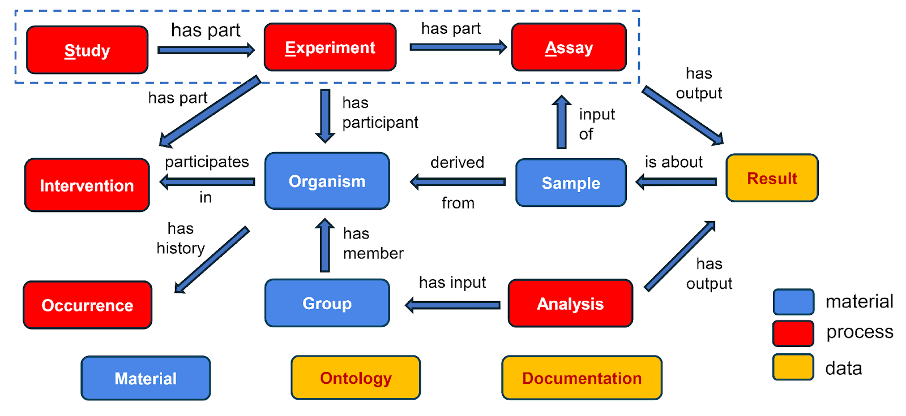

SEA-CDM Documentation
This contains the documentation for the different tables found for SEA CDM. This includes a textual description of the table, the columns contained within a table, and the annotations for each column.
Each column also has a default ontology ID that is used as a parent class for each entry. Bolded ontology IDs is the parent for all compliant ontology IDs. This may be used as a placeholder for people using SEA-CDM model.
